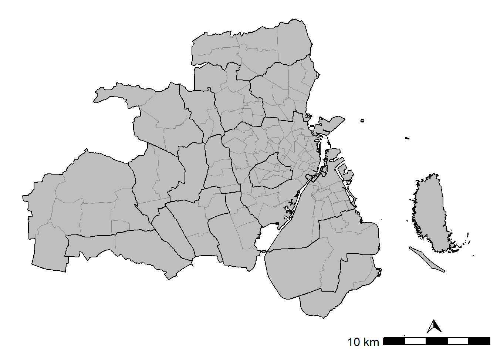

Chapter 1 Capital region
1.1 Data
1.1.1 Parishes in the capital region
# Download DAGI (scale 1:10000)
dangeo_get_data(ftp_folder = "landinddelinger/dagi/SHAPE",
zip_name = "DAGIREF_SHAPE_UTM32-EUREF89.zip")
# Municipalities (get from DAGI)
muni_link <- paste(loc_dir,
"DAGIREF_SHAPE_UTM32-EUREF89/ADM",
"KOMMUNE.shp",
sep = "/")
dk_muni <- read_sf(muni_link) %>%
st_zm() %>%
st_transform(crs = "EPSG:25832") %>%
select(KOMKODE, KOMNAVN) %>%
rename(muni_id = KOMKODE,
muni_name = KOMNAVN) %>%
group_by(muni_id, muni_name) %>%
summarise(geometry = sf::st_union(geometry)) %>%
ungroup() %>%
# Calculate the area of each municipalitie (km2)
mutate(area_km2 = as.numeric(units::set_units(st_area(.), km^2)))
# Country
dk_country <- st_union(dk_muni)
# Codes of the communes under study
capital_region_muni <- c("København",
"Frederiksberg",
"Albertslund",
"Ballerup",
"Brøndby",
"Dragør",
"Gentofte",
"Gladsaxe",
"Glostrup",
"Herlev",
"Høje-Taastrup",
"Hvidovre",
"Ishøj",
"Lyngby-Taarbæk",
"Rødovre",
"Tårnby",
"Vallensbæk")
# Select municipalities under study
capital_muni <- dk_muni %>% filter(muni_name %in% capital_region_muni)
dk_country_crop <- st_crop(dk_country, capital_muni)
# Parishes polygons of Denmark, and select those in the study area
prsh_link <- paste(loc_dir,
"DAGIREF_SHAPE_UTM32-EUREF89/ADM",
"SOGN.shp",
sep = "/")
dk_prsh <- read_sf(prsh_link) %>%
st_zm() %>%
st_transform(crs = "EPSG:25832")
# Select those where the centroid is in the capital region
dk_prsh_cent <- st_centroid(dk_prsh)
capital_prsh_cent <- st_intersection(dk_prsh_cent, capital_muni)
capital_prsh <- dk_prsh %>%
# Get parishes in the capital region
filter(SOGNEKODE %in% capital_prsh_cent$SOGNEKODE) %>%
# Combine several parish features geometries into one polygon
group_by(SOGNEKODE, SOGNENAVN) %>%
summarise(geometry = st_union(geometry)) %>%
ungroup() %>%
# add area of the parish (in km2)
mutate(prsh_area_km2 = as.numeric(units::set_units(st_area(.), km^2))) %>%
# Translate column names
rename(prsh_id = SOGNEKODE,
prsh_name = SOGNENAVN)
# Contour of the capital region (merge the parishes in one polygon):
capital_area <- capital_prsh %>%
st_union() %>%
st_sf() %>%
st_transform(crs = "EPSG:25832")ggplot() +
geom_sf(data = capital_prsh,
aes(geometry = geometry),
fill = "grey",
color = "grey50",
size = 0.05) +
geom_sf(data = capital_muni,
aes(geometry = geometry),
fill = NA,
color = "black",
size = 0.5) +
theme_void() +
annotation_scale(location = "br", text_cex = 1) +
annotation_north_arrow(location = "br",
pad_x = unit(2, "cm"),
pad_y = unit(0.65, "cm"),
which_north = "true",
height = unit(0.5, "cm"),
width = unit(0.5, "cm"),
style = north_arrow_orienteering(text_col = "white",
text_size = 1))
1.1.2 Population
Population data from Denmark Statistics:
## Auxiliary functions for reading the data with the package *danstat*
# Loop by year for getting DST data
steps <- function(year){
var_values <- list(id_region, id_ancestry, year)
var_input <- purrr::map2(.x = var_codes,
.y = var_values,
.f = ~list(code = .x, values = .y))
get_data(id_table, variables = var_input)
}
# Function for removing punctuation, lowercase, stem, stopwords, and collapse strings
rm_words <- function(x, stopwords) { x %>%
strsplit(" ", fixed = TRUE) %>%
lapply(tm::removePunctuation) %>%
lapply(tolower) %>%
lapply(SnowballC::wordStem) %>%
lapply(function(x) x[!x %in% stopwords]) %>%
vapply(function(x) paste(x , collapse = "_"), character(1))
}## Read and clean table KMSTA001
# Table
id_table <- "KMSTA001"
var_pop <- get_table_metadata(table_id = id_table, variables_only = TRUE)
# Codes for var_input
var_codes <- c("SOGN", "HERKOMST", "Tid")
# Values for var_input
# Region: parishes of the study area (i.e. capital_parish)
id_region <- capital_prsh$prsh_id
# Ancestry
id_ancestry <- NA
# Quarters
id_year <- var_pop$values[[4]]$id[1:13] # Select 2008-2020
# Read data (n parallel)
plan(multisession, workers = 7)
capital_prsh_ancestry_read <- id_year %>%
future_map_dfr(steps)
plan("default")
# Clean data
capital_prsh_ancestry <- capital_prsh_ancestry_read %>%
# Translate column names into English
rename(parish = SOGN,
ancestry = HERKOMST,
year = TID,
value = INDHOLD) %>%
# Get parish codes, names, and municipality names
separate(parish,
c("prsh_id", "prsh_name", "muni_name"),
sep = " ",
extra = "drop") %>%
mutate(muni_name = gsub("\\(", "", muni_name)) %>%
# Make shorter names in ancestry
mutate(ancestry = case_when(
ancestry == "Persons of Danish origin" ~ "pop_dan",
ancestry == "Immigrants from western countries" ~ "pop_mi_wst",
ancestry == "Immigrants from non-western countries" ~ "pop_mi_nwst",
ancestry == "Descendants from western countries" ~ "pop_de_wst",
ancestry == "Descendants from non-western countries" ~ "pop_de_nwst"),
ancestry = factor(ancestry)) %>%
# Pivot (one row for peach parish and year)
pivot_wider(names_from = ancestry, values_from = value) %>%
# Merge immigrants and their descendants (i.e. foreigners)
mutate(pop_frgn_wst = pop_mi_wst + pop_de_wst,
pop_frgn_nwst = pop_mi_nwst + pop_de_nwst) %>%
select(-c(pop_mi_wst, pop_de_wst, pop_mi_nwst, pop_de_nwst)) %>%
# Add column with total population
mutate(pop_total = select(., starts_with("pop_")) %>% rowSums()) %>%
# Put NA when pop_* is 0
mutate(across(starts_with("pop"), ~ifelse(.x == 0, NA, .x)))
# Add the spatial information:
capital_prsh_ancestry_sf <- capital_prsh %>%
select(prsh_id, prsh_area_km2) %>%
left_join(capital_prsh_ancestry, by = c("prsh_id")) %>%
# Population density
mutate(across(starts_with("pop"), ~.x/prsh_area_km2, .names = "{.col}_km2"))1.1.3 Housing prices
# Load data
sum_runits_oft_prices <- readRDS("prsh_house_prices.rds")
# Plot
ggplot() +
geom_sf(data = dk_country_crop,
aes(geometry = geometry),
fill = "grey") +
geom_sf(data = sum_runits_oft_prices,
aes(geometry = geometry,
fill = cut_number(median_2020_kDKK_m2,
n = 10,
ordered_result = TRUE,
dig.lab = 0)),
color = NA,
legend = "meh") +
geom_sf(data = capital_muni,
aes(geometry = geometry),
fill = NA,
color = "white",
size = 0.05) +
scale_fill_viridis_d(
name = TeX("$\\overset{\\textbf{Percentiles}}{(kDKK/m^2)}$"),
option = "magma",
direction = -1) +
theme_void() +
guides(fill = guide_legend(reverse=T)) +
labs(x = "",
y = "") +
facet_wrap( ~year, ncol = 3)Figure 1.1: Median 2020-adjusted house prices in the ordinary free trade by grid cells of 100m x 100m
1.2 Ternary plots
1.2.1 Diagrams
Population structure by year, with all the data together in the same diagram.
ggtern::ggtern(data = capital_prsh_ancestry_sf,
aes(x = pop_dan,
y = pop_frgn_wst,
z = pop_frgn_nwst,
colour = factor(year))) +
scale_color_viridis_d(name = "Year") +
geom_point() +
ggtern::theme_rgbw() +
ggtern::theme_hidetitles()Figure 1.2: Ternary plot by year
Separate plots by year and add the parishes in the legend.
ggtern::ggtern(data = capital_prsh_ancestry_sf,
aes(x = pop_dan,
y = pop_frgn_wst,
z = pop_frgn_nwst,
colour = prsh_name)) +
geom_point() +
facet_wrap( ~year, ncol = 3) +
ggtern::theme_rgbw() +
ggtern::theme_hidetitles() +
theme(legend.position = "bottom") +
guides(colour = guide_legend(title.position = "top"))Figure 1.3: Ternary plots by parish
Links with house prices (zoom the figure to the parishes with median values).
ggtern::ggtern(data = sum_runits_oft_prices,
aes(x = pop_dan,
y = pop_frgn_wst,
z = pop_frgn_nwst,
colour = cut_number(median_2020_kDKK_m2,
n = 10,
dig.lab = 0))) +
viridis::scale_color_viridis(name = "Percentiles\n[kDkk/m2]",
option = "turbo",
discrete = TRUE) +
geom_point(size = 0.85) +
ggtern::theme_rgbw() +
ggtern::theme_hidetitles() +
ggtern::theme_zoom_L(0.6) +
guides(colour = guide_legend(reverse = TRUE,
override.aes = list(size = 3)))Figure 1.4: Median housing prices and popupation distribution by parish (all data)
ggtern::ggtern(data = sum_runits_oft_prices,
aes(x = pop_dan,
y = pop_frgn_wst,
z = pop_frgn_nwst,
colour = cut_number(median_2020_kDKK_m2,
n = 10,
dig.lab = 0))) +
facet_wrap( ~ year, ncol = 3)+
viridis::scale_color_viridis(name = "Percentiles\n[kDkk/m2]",
option = "turbo",
discrete = TRUE) +
geom_point(size = 0.9) +
ggtern::theme_rgbw() +
ggtern::theme_hidetitles() +
ggtern::theme_zoom_L(0.6) +
guides(colour = guide_legend(reverse = TRUE,
override.aes = list(size = 3)))Figure 1.5: Median housing prices and popupation distribution by parish and year
1.2.2 Maps
Center over the compositional mean of 2019 (i.e. Danes ~ 80.3%; non-wst ~ 12.3; and wst ~ 7.4%).
f_tern_map <- function(df) {
# Make colours
tric <- tricolore::Tricolore(df,
p1 = "pop_dan",
p2 = "pop_frgn_wst",
p3 = "pop_frgn_nwst",
breaks = Inf,
show_data = FALSE,
center = c(0.803, 0.074, 0.123),
hue = 2/12,
lightness = 1,
chroma = 1
)
# legend
p_legend <- tric$key +
labs(L = "% Danes",
T = "% Wst",
R = "% Non-wst") +
theme(axis.title = element_text(size = 5, face = "bold"),
axis.text = element_text(size = 5))
# Add columns with colours
df <- df %>%
mutate(pop_rgb = tric$rgb)
# Map
ggplot() +
geom_sf(data = dk_country_crop,
aes(geometry = geometry),
fill = "grey") +
geom_sf(data = df,
aes(fill = pop_rgb, geometry = geometry),
size = 0.05) +
scale_fill_identity() +
geom_sf(data = capital_muni,
aes(geometry = geometry),
fill = NA,
color = "white",
size = 0.5)+
labs(title = df$year) +
theme_void() +
annotation_custom(
ggtern::ggplotGrob(p_legend) ,
xmin = 730000,
xmax = 742000,
ymin = 6178000,
ymax = 6190000
)
}
plts <- capital_prsh_ancestry_sf %>%
group_split(year) %>%
map(. , .f = f_tern_map)
wrap_plots(plts, ncol = 3)Figure 1.6: Population distribution
Only for 2020.
plts[[13]]Figure 1.7: Population distribution in 2020